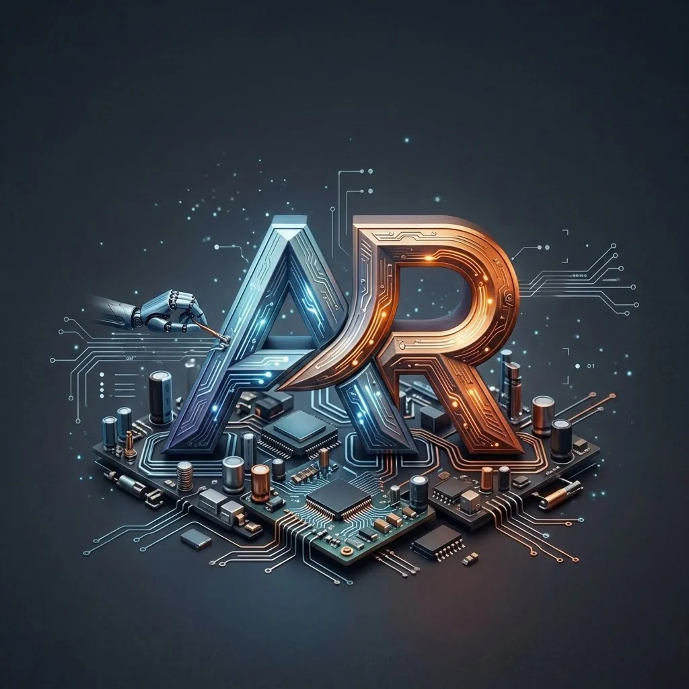

12
PRODUCCIÓN Y CONSUMO RESPONSABLESODS 12
Aportación: Fomentar la reparación y el mantenimiento para evitar compras y residuos innecesarios.
Acción concreta: Incluir un buscador de puntos limpios para reciclar componentes.

HARDWAREARObjetivos de Desarrollo Sostenible relacionados con nuestro proyecto.
Aportación: Fomentar la reparación y el mantenimiento para evitar compras y residuos innecesarios.
Acción concreta: Incluir un buscador de puntos limpios para reciclar componentes.
Aportación: Facilitar el aprendizaje práctico de la microinformática.
Acción concreta: Crear un modo educativo gratuito para institutos y centros de FP.
Aportación: Modernización y digitalización del soporte técnico tradicional mediante el uso de Realidad Aumentada e Inteligencia Artificial.
Acción concreta: Ampliar el sistema de reconocimiento visual para guiar el conexionado.
Aportación: Reducción del impacto ambiental urbano generado por la acumulación y mala gestión de residuos tecnológicos.
Acción concreta: Implementar alertas de mantenimiento preventivo (limpieza de polvo) para alargar al máximo la vida útil de los equipos.